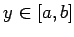

Inhalt Index DeskTop Bronstein

 Lineare Integralgleichungen Fredholmsche Integralgleichung 1. Art Begriffe, analytische Grundlagen
Lineare Integralgleichungen Fredholmsche Integralgleichung 1. Art Begriffe, analytische Grundlagen


Zwei quadratisch integrierbare Funktionen mit  werden als orthogonal bezeichnet, falls für  gilt
gilt
Ein Funktionensystem  im Raum L2[a,b] wird als Orthonormalsystem bezeichnet, wenn die Beziehungen
im Raum L2[a,b] wird als Orthonormalsystem bezeichnet, wenn die Beziehungen
erfüllt sind. Ein Orthonormalsystem ist überdies vollständig, wenn in L2[a,b] keine Funktion existiert, die zu allen Funktionen dieses Orthonormalsystems orthogonal ist. Ein vollständiges Orthonormalsystem besteht aus abzählbar vielen Funktionen, die eine Basis des Raumes L2[a,b] bilden. Um aus einem Funktionensystem  ein Orthonormalsystem
ein Orthonormalsystem  zu ermitteln, kann das GRAM-SCHMIDTsche Orthogonalisierungsverfahren verwendet werden. Es bestimmt sukzessive für
zu ermitteln, kann das GRAM-SCHMIDTsche Orthogonalisierungsverfahren verwendet werden. Es bestimmt sukzessive für  die Koeffizienten derart, daß
die Koeffizienten derart, daß
normiert und zu allen Funktionen orthogonal ist.